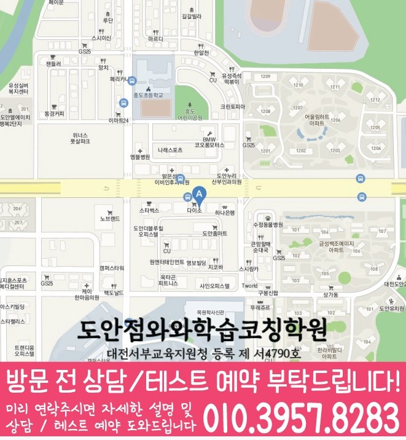

High school Korean · English · Math
도안동 고등학생 국영수학원
도안동 고등학생 국영수학원 선택 전 고등 내신 자료, 최근 오답과 과목별 가능 학년, 센터 위치·비용 확인 기준을 안내합니다.
01 Quick answer
도안동에서 먼저 확인할 내용
도안동에서 고등학생 국영수학원을 찾는다면 와와학습코칭센터 도안점의 과목별 가능 학년을 먼저 확인하세요. 제공된 고등학교 참고 자료와 학생의 실제 교재를 대조하고, 학생의 실제 풀이 기록에 맞게 현재 자료에서 확인한 문제를 수업, 복습과 재점검으로 연결하는지 살펴봐야 합니다.
대표 학생 상황
세 과목의 과제 순서와 오답 복습 시점을 스스로 정리하기 어려운 고등학생


010-6839-8283상담 전 핵심 안내
대전광역시 도안동에서 고등학생 영어·수학 학원을 찾고 있다면, 지역 센터가 현재 실력 진단부터 개념 보완, 문제풀이, 오답 관리까지 이어지는 학습 흐름을 점검합니다. 도안동 다음 학습 단계에서는 학습 시간 배분을 바탕으로 상담에서 확인할 기준을 정리합니다. 도안동 고등학생 국영수학원 선택에서 핵심은 막연한 설명이 아니라 국어·영어·수학의 누수가 어떻게 발견되고 보완되는지입니다. 이 사례에서는 도안동 학생의 과목별 보완 순서를 확인합니다.
처음 상담에서 구분할 학습 과제
정확한 진단으로 약점부터 정리. 처음부터 어려운 문제를 밀어붙이기보다, 성취도와 풀이 과정(실수/개념 부족)을 점검해 우선순위를 세웁니다.
도안동 학습 과정에서는 단원별 이해도를 바탕으로 복습 시점을 정합니다. 영어는 문법·독해·어휘 흐름을, 수학은 개념·유형·오답 원인을 분류해 반복 학습이 효율적으로 이루어지게 합니다.
내신과 수능형을 전략적으로 분리. 시험 유형에 맞춰 공부 순서를 조정하고, 같은 단원이라도 출제 의도를 달리해 학습 목표를 명확히 합니다.
도안동 고등학생 학습 점검에서 내신 대비는 시험 기간에만 갑자기 시작되는 과정이 아닙니다. 도안동에서 이 학생에게 기말 기간에는 과목별로 남은 범위를 시각화하고, 국어·영어·수학의 우선순위를 하루 단위로 조정해야 합니다. 대전광역시 서구 도안동 고등학생이 국어·영어·수학을 함께 관리하려면 오답은 틀린 이유, 다시 풀 날짜, 비슷한 문제 적용 여부까지 남겨야 다음 시험의 자료가 됩니다. 도안동 고등학생 학습 점검에서 시험 3주 전에는 범위표를 단원별 과제로 바꾸고, 시험 2주 전에는 틀린 문항을 유형별로 묶어야 합니다.
설명을 듣고 풀이로 확인하는 과정
이해 중심 수업으로 성적이 남게. 풀이만 보여주지 않고, 왜 그 답이 나오는지 개념 연결을 함께 설명해 오래 기억되도록 만듭니다.
도안동 수업 내용을 점검할 때는 진단 결과를 바탕으로 설명할 수 있는 범위를 확인합니다. 도안동 과목별 점검에서는 단원별 이해도를 바탕으로 상담에서 확인할 기준을 정리합니다.
도안동 학습 점검에서는 진단 결과를 바탕으로 다음 학습 계획을 조정합니다. 숙제·복습·오답 정리의 실행력을 점검해 수업 시간이 일회성으로 끝나지 않도록 코칭합니다.
국영수를 함께 보려는 부모님이 놓치기 쉬운 부분은 “고등 국어·영어·수학 관리 기준에서 우리 아이가 세 과목을 모두 따라갈 수 있을까”라는 점입니다. 대전광역시 서구 도안동 기준으로는 내신 핵심 과목 국어·영어·수학을 한꺼번에 늘리는 계획보다는 과목별 현재 수준과 완료 기록부터 살펴야 합니다. 고등학생의 세 과목 과제 결과를 비교해 먼저 되짚을 내용을 정해야 합니다. 도안동에서 수업을 비교할 때는 최근 단원, 틀린 유형과 실제 과제 시간을 한 기록에서 확인하는 편이 좋습니다. 도안동 학습 계획의 출발점은 오늘 실천하고 다음 점검에서 확인할 기준을 고르는 일입니다.
도안동 학교 일정과 현재 교재를 함께 확인하기
가정에서 기록을 준비하면, 상담 준비를 위해 제공된 고등학교 목록은 유성고·도안고·서대전여고입니다. 확인 순서를 세울 때, 이는 수업 가능 학교를 단정하는 자료가 아니라 학생의 실제 범위와 과제를 확인하기 위한 참고 정보입니다.
학교 자료를 대조할 때, 상담에서는 시험 범위표·학교 프린트·수행평가 일정 자료를 과목별로 나누어 현재 범위와 반복 오답을 확인합니다. 과목별 기록을 살펴보면, 도안동 학생에게 필요한 것은 학교명 반복보다 자료에서 찾은 문제를 다음 계획으로 바꾸는 과정입니다.
학습 계획을 실제 실행으로 옮기는 순서
1. 현재 수준 확인. 학년, 학교 진도, 최근 시험 결과를 바탕으로 단원별 약점과 자주 틀리는 패턴(실수·개념·계산)을 진단합니다.
2. 개념 정리와 유형 학습. 도안동 고등학생 상담에서는 과목별 완료 기준을 학교 일정과 대조해 실행 가능한 분량을 정합니다.
3. 오답 관리와 학습 피드백. 오답노트를 단순 기록이 아니라 원인별 분류 체계로 운영해, 같은 실수가 반복되지 않게 다음 학습을 설계합니다.
4. 시험 대비 점검. 내신·모의고사 기간별로 복습 우선순위를 조정하고, 시간 배분 훈련과 실전 전략을 함께 점검합니다.
학년 변화에 따라 달라지는 점검 항목
고등 1학년. 기초 개념을 빈틈없이 다지고, 영어 문법과 수학 필수 유형을 안정적으로 잡습니다. 내신 시험 출제 포인트를 기준으로 단원별 반복 학습 계획을 세웁니다.
고등 2학년. 도안동 학습 순서를 정할 때는 단원별 이해도를 바탕으로 다음 학습 계획을 조정합니다. 모의고사 유형을 점검해 오답 패턴을 정리하고 같은 실수를 줄입니다.
고등 3학년. 내신과 수능형 학습을 구분해 시간 관리 전략을 적용합니다. 도안동 수업 내용을 점검할 때는 복습 이력을 바탕으로 다음 학습 계획을 조정합니다.
도안동 지역 센터는 고등학생의 현재 상태를 기준으로 영어·수학 학습 방향을 정리하고, 상담을 통해 목표(내신/모의고사/수능형)에 맞춘 구체적인 학습 로드맵을 정리합니다.
02 Consultation examples
도안동 학부모 상담 상황 예시
아래 내용은 실제 고객 후기나 성적 결과가 아니라, 상담에서 확인할 질문을 이해하기 위한 상황 예시입니다.
최근 학교 학습 준비가 한 과목에 치우친 도안동 고등학생을 가정했습니다. 학부모는 현재 교재와 학교 자료를 바탕으로 국어·영어·수학의 병목을 따로 듣고, 가정에서 확인할 기록을 정리합니다.
도안동에서 제공된 고등학교 참고 정보인 유성고·도안고·서대전여고의 목록과 학생의 실제 학교 자료를 대조해 질문하는 상담 상황입니다. 제공 자료와 학생이 가져온 자료를 구분하고, 확인되지 않은 학교 정보나 수업 조건은 임의로 단정하지 않습니다.
03 FAQ
도안동 고등학생 국영수학원 자주 묻는 질문
학부모님이 상담 전에 자주 확인하는 내용을 질문과 답변으로 정리했습니다.
도안동 고등학생 국영수학원 선택 전 학생의 어떤 습관을 살펴야 하나요?
시험 일정은 알고 있지만 실행 가능한 주간 분량을 정하기 어렵다면 최근 교재와 학교 자료를 가져가 보세요. 도안동 상담에서 집중 과목과 최소 복습량을 구분할 수 있습니다.
국어·영어·수학 과제량은 도안동 고등학생에게 어떻게 배분하나요?
도안동 상담에서는 국영수를 함께 관리한다는 표현이 세 과목을 동일하게 다룬다는 뜻은 아닙니다. 학생이 막힌 장면과 시험 일정을 과목별로 확인한 뒤 공통 시간표 안에서 충돌하지 않게 배치합니다.
도안동 학교별 교과 자료는 어떤 방식으로 확인하나요?
도안동의 고등학교 참고 정보에는 유성고·도안고·서대전여고 등이 표시됩니다. 학교 목록보다 학생의 현재 시험 범위표·학교 프린트·수행평가 일정 자료와 센터 운영 범위를 대조하는 과정이 우선입니다.
도안동 학원 상담에서 수업 가능 학년과 비용을 어떻게 확인하나요?
센터마다 운영 조건이 다를 수 있습니다. 실제 방문 위치는 위 센터 확인 정보에서 확인할 수 있습니다. 센터별 교습비 확인 버튼에서 제공 자료를 볼 수 있습니다. 도안동 상담에서 과목별 가능 학년과 보강 방식을 함께 확인하세요.
04 Continue
도안동 페이지 이동
카테고리 전체 지역 또는 앞뒤 지역 안내로 이동할 수 있습니다.